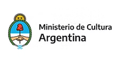
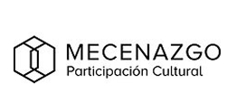
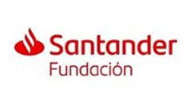
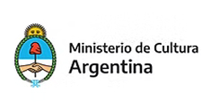
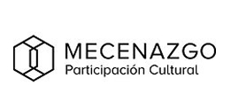
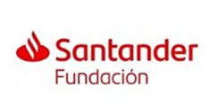

El centro
MOVAQ Aquelarre en Movimiento es una casa escénica, un espacio de aprendizaje y encuentro para intercambiar, resonar y crecer. Un lugar donde el conocimiento, el respeto, el pensamiento crítico y colectivo son valores transversales a cada actividad. MOVAQ es movimiento, es danza, es teatro, es cuerpo pensando, es música, es red. MOVAQ es una sala que abrió sus puertas en marzo 2020, en donde cada función, cada clase y cada evento es un ritual de encuentro.
 




